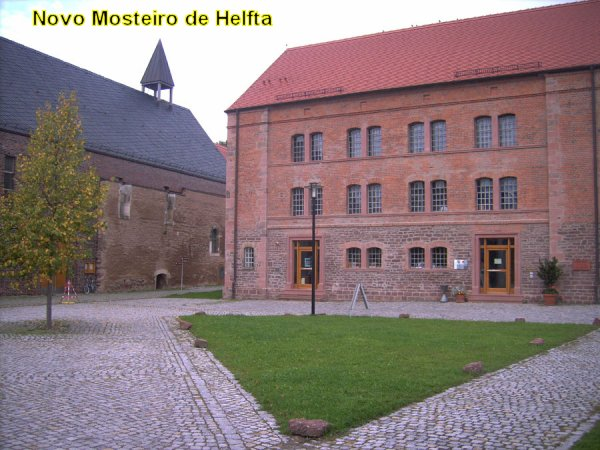
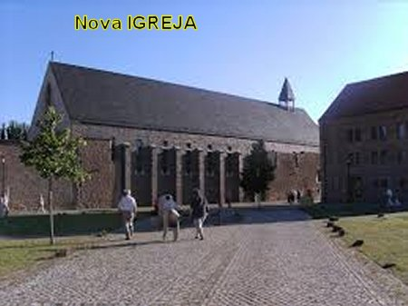
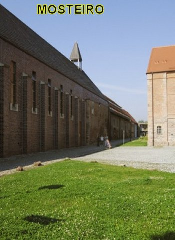
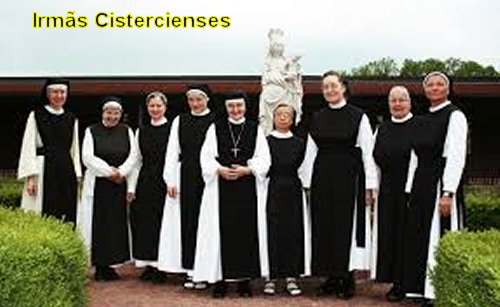
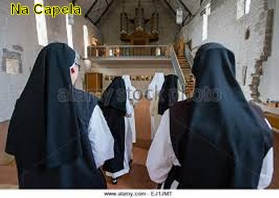
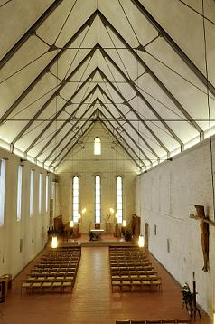
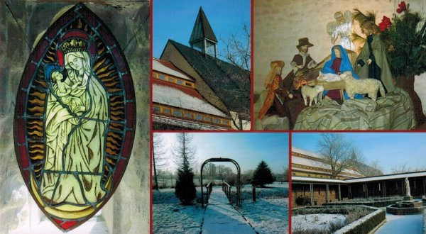
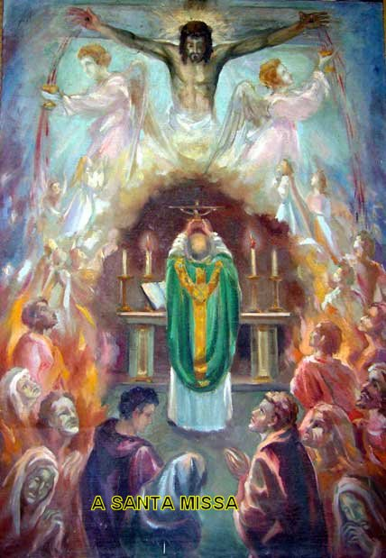
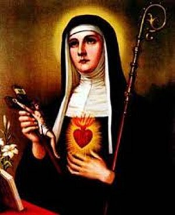

ÚLTIMAS PALAVRAS
ACONTECIMENTOS APÓS A MORTE
Aproximadamente em 1342, 40 anos após a morte de Santa Gertrudes, o Mosteiro de Helfta foi invadido e incendiado pelos soldados do terrível Duque Albrecht de Brunswick. Não foi completamente destruído, mas por segurança, em 1343, as Monjas se mudaram para dentro das muralhas da cidade de Eisleben, onde construíram um novo Mosteiro de Helfta, mas conservaram a posse do antigo, mantendo intacto o tumulo das Irmãs, provavelmente, com a esperança de voltar um dia, quando a paz fosse restabelecida.
Entretanto, em 1525, numa insurreição de camponeses no curso da Reforma Protestante de Martinho Lutero, o novo Mosteiro de Helfta foi também incendiado e as religiosas foram obrigadas a fugir e procurar asilo em outros locais. Por isso, do sepulcro de Santa Gertrudes não existe mais nada, pois os seus restos mortais se perderam depois da devastação do primeiro Convento de Helfta.
Somente em 1994 foi restabelecida a Diocese de Magdeburgo, na Alemanha, que comprou a área e as edificações existentes com donativos de católicos alemães. Em 1998, começou a reconstrução do novo Mosteiro de Helfta, com trabalhos de restauração e escavações arqueológicas, com objetivo de recuperar alguma coisa do passado. Em 1999, as Monjas Cistercienses de Seligenthal, da Baviera, assumiram o novo Convento. Já existem novas instalações em perfeito funcionamento.
A grande preocupação dos religiosos alemães de recuperar o Mosteiro de Santa Maria de Helfta, tem uma razão muito forte e evidente, porque ele foi um famoso Mosteiro Cisterciense do século XIII, inclusive denominado de "A Coroa dos Mosteiros Alemães". Três mulheres Santas são o seu fundamento e sua glória: Santa Matilde de Magdeburg, Santa Matilde de Hackeborn e Santa Gertrudes "a Grande".
Atualmente o Mosteiro de Helfta se converteu num centro de espiritualidade na Diocese de Magdeburgo. As Irmãs realizam Seminários assim como Retiros e Exercícios Espirituais.
ORAÇÕES
Muitos são os milagres que aconteceram e acontecem feitos por DEUS, pela intercessão eficaz e carinhosa de Santa Gertrudes de Helfta. São acontecimentos sobrenaturais de uma infinidade de naturezas, que beneficiaram e beneficiam devotos e simpatizantes em todas as partes do mundo. Com o objetivo de convidá-los a uma familiaridade com a Santa, apresentamos uma oração a JESUS NOSSO SENHOR, por intercessão dela.
NOSSO SENHOR JESUS CRISTO, DEUS de bondade, humildemente eu VOS peço, lembrai-VOS da afeição e do amor que nutristes para com o coração virginal de Santa Gertrudes. Por esse mesmo amor foste impelido a lhe prometer que pecador nenhum, que a venerasse e amasse morreria sem preparação. Por isso rogo-VOS, concedais a este indigno pecador a graça de poder expiar todos os seus muitos pecados e de se emendar numa concreta conversão, de VOS amar de todo o coração e de morrer em graça, na esperança e na fé em VÓS. Amém.
Em agradecimento rezar: 1 CREDO + 1 PAI NOSSO + 1 AVE MARIA + 1 GLÓRIA.

FOTOGRAFIAS










CONVITE
Visite o PORTAL DO APOSTOLADO no endereço abaixo, e tenha a oportunidade de conhecer os nossos Sites, todos eles construídos e bem fundamentados na Sagrada Escritura, nas Tradições Cristãs, nas Manifestações Sobrenaturais e na Vida e Obra dos Santos, com o objetivo de informar somente a verdade.
http://www.apostoladosagradoscoracoes.com/

"E-MAIL"
Para se comunicar conosco, clicar na figura abaixo:


"FIRMAS DE BUSCA"